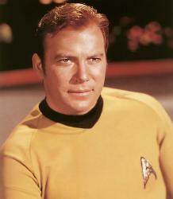

|
|
James Tiberius Kirk |
|
|||||
|  |
Dati Personali
Matricola SC937-0176CEC
Nato a Riverside, Iowa, USA, Terra il
26.03.2233
Un fratello, George Samuel Kirk
Entrato in Accademia nel 2250,
graduatosi nel 2254
Presunto morto nel 2293
Assassinato da Soran nel 2371
e sepolto su Veridiano III
James Kirk è entrato nell'Accademia della Flotta Stellare appena
diciassettenne e alla fine degli studi è risultato essere uno dei migliori
allievi del corso. La sua carriera è stata molto veloce: appena trentenne è
diventato il più giovane capitano della
Flotta al comando dell'incrociatore
pesante Enterprise. È ormai leggendaria la missione quinquennale portata a termine da
Kirk con il suo equipaggio, in seguito alla quale egli venne promosso
Ammiraglio. Con questo grado ha ricoperto per due anni e mezzo la mansione di
capo delle operazioni della
Flotta Stellare fino alla crisi di
V'ger, in seguito alla
quale riassume il comando dell'Enterprise. II suo ritorno nello spazio
non è stato definitivo, dal momento che ha continuato a svolgere anche mansioni
all'Accademia della Flotta. Questo periodo è stato segnato da varie
vicissitudini, tra le quali la morte a causa dell'uso sconsiderato del
dispositivo Genesis
del suo miglior amico, il capitano Spock. Per poter riportare su
Vulcano il
katra di Spock, secondo
le tradizioni vulcaniane, Kirk ha
messo a repentaglio la sua carriera rubando e in seguito distruggendo l'Enterprise,
disobbedendo però agli ordini diretti di un suo superiore. Queste azioni lo
hanno portato davanti al giudizio del Consiglio Federale, ma alcune circostanze
attenuanti (l'aver salvato la Terra da una
sonda aliena sconosciuta) hanno fatto sì che la condanna fosse ridotta alla
riduzione al grado di Capitano. Perciò il vecchio equipaggio è stato assegnato
ad una nave che, per l'occasione è stata ribattezzata
Enterprise-A. A bordo di questo nuovo vascello ha intrapreso nuove missioni
che lo hanno portato, tra l'altro, presso il centro della nostra galassia e alla
prima conferenza di pace tra la Federazione e l'
Impero Klingon.
James Kirk è un idealista con una personalità molto forte e complessa.
Nonostante si renda pienamente conto delle responsabilità del comando, si lascia
spesso guidare dal suo istinto piuttosto che dalla ragione. Questo modo di
agire, benché a volte risulti poco ortodosso, lo porta sempre ad avere ottimi
risultati. Basta ricordare, da esempio, che non solo risolse il famoso test
della Kobayashi Maru
cambiando segretamente la programmazione del simulatore, ma ricevette per questo
anche un encomio per «originalità tattica». Il suo carisma come comandante è
palese ed è proprio con la sua personalità sicura e attiva che Kirk si à
assicurato la fedeltà dei suoi compagni; questo tratto affascinante ha un
effetto calamitante soprattutto sugli esponenti del sesso opposto. Innumerevoli
sono infatti le relazioni sentimentali di Kirk, che però non possono minimamente
competere con l'unico grande amore della sua vita: l'Enterprise.
Onorificenze
Palm Leaf of Axanar Peace Mission.
Grankite Order of Tactics, Class of Excellence.
Prentares Ribbon of Commendation, First and Second Class.
Silver Palm with Cluster.
Starfleet Citation for Conspicuos Gallantry.
Karagite Order of Heroism.
United Federation of Planets Medal of Honor.
Assegnamenti
| USS Republic | Guardiamarina (Court Martial). | |
| 2254 | USS Farragut | Assistente Ufficiale Tecnico. |
| USS Alexander | Ufficiale Comandante. | |
| 2264 | USS Enterprise | Capitano, Ufficiale Comandante. |
| 2269 | Comando della Flotta Stellare | Ammiraglio, Capo Operazioni della Flotta Stellare. |
| 2271 | USS Enterprise | Ammiraglio, Ufficiale Comandante; assegnamento temporaneo per affrontare la crisi di V'ger (Star Trek I). |
| 2285 | USS Enterprise | Ammiraglio, Ufficiale Comandante; assegnamento temporaneo per affrontare la crisi del Genesis (Star Trek II). |
| 2286 | Degradato a Capitano a causa della disobbedienza ad ordini di un suo diretto superiore (Star Trek IV). | |
| 2286 | USS Enterprise | Capitano, Ufficiale Comandante (Star Trek IV). |
Segni particolari
Ha contratto da giovane la
chiromeningite vegana
e ne porta i microrganismi nel sangue (The Mark
of Gideon).
Allergico al Retnax V (Star
Trek II).